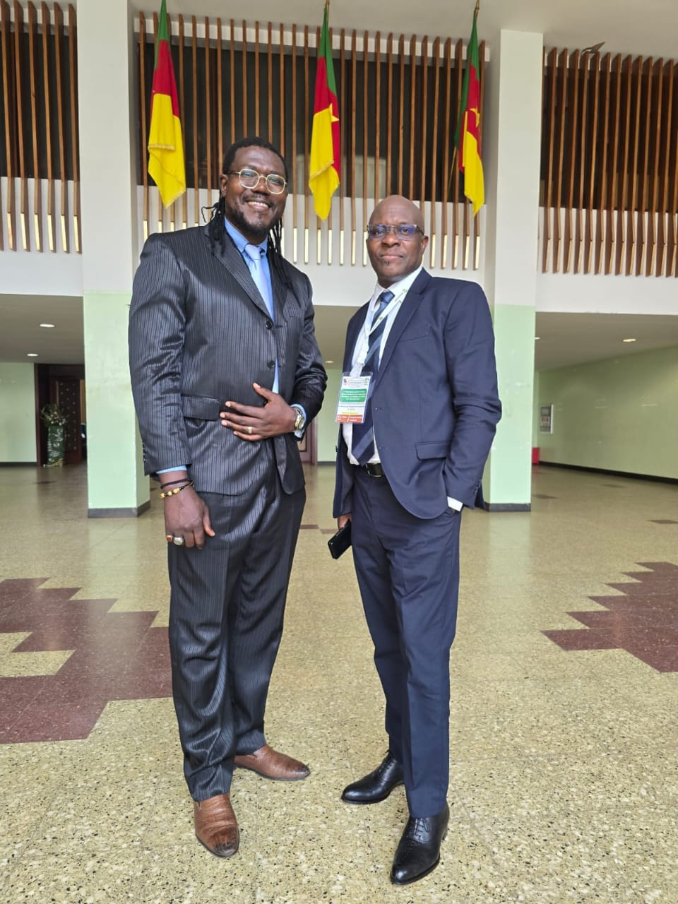
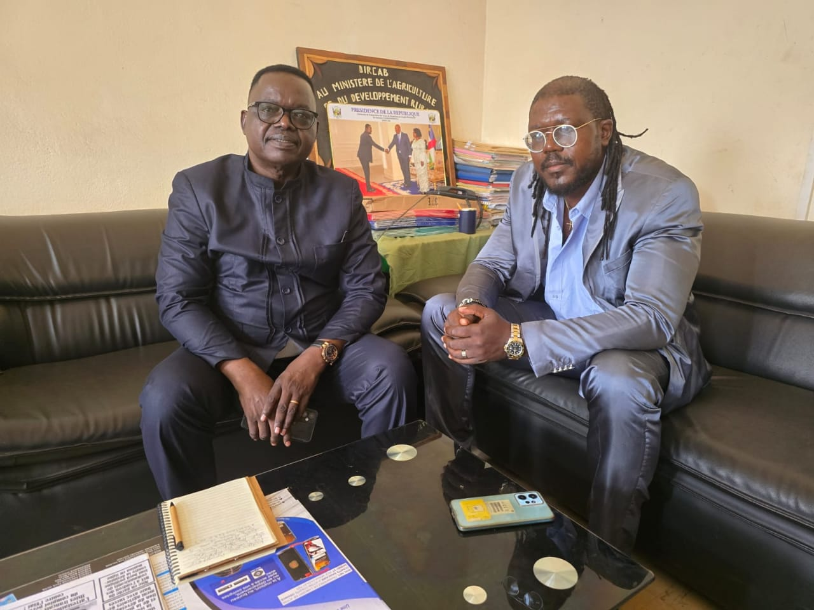
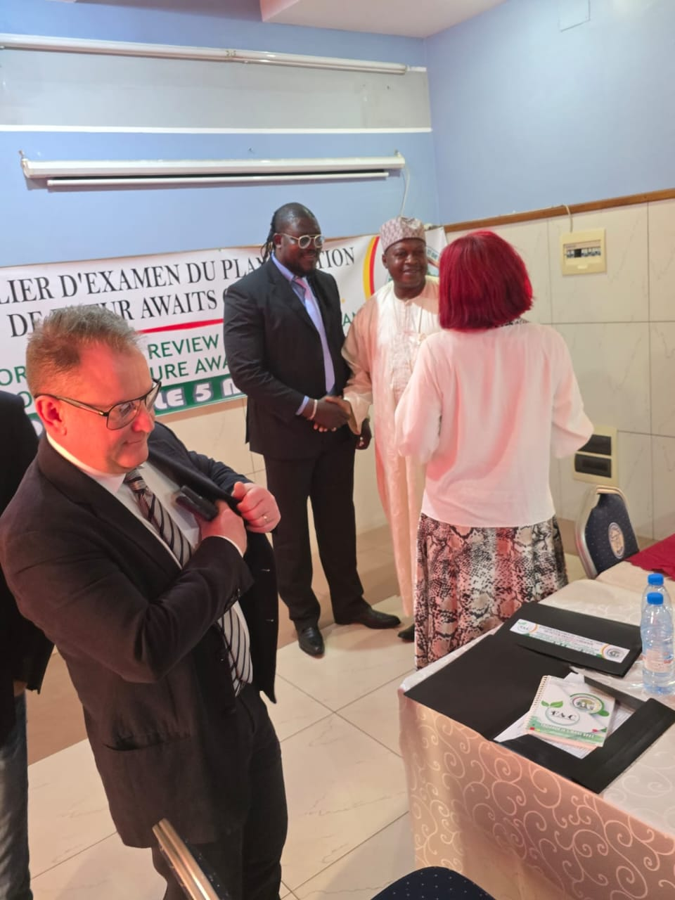
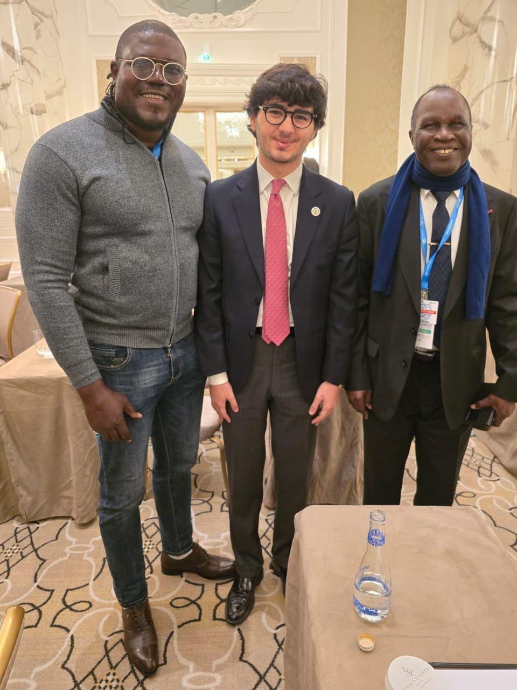
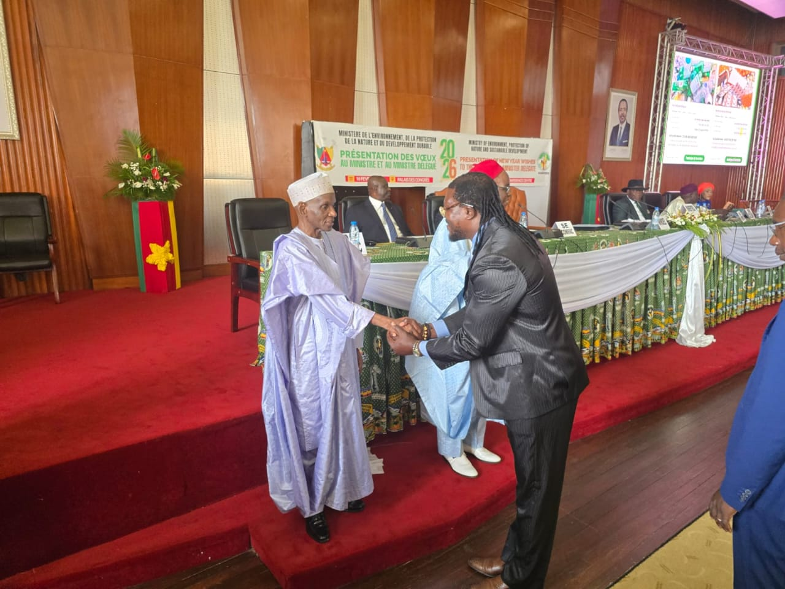
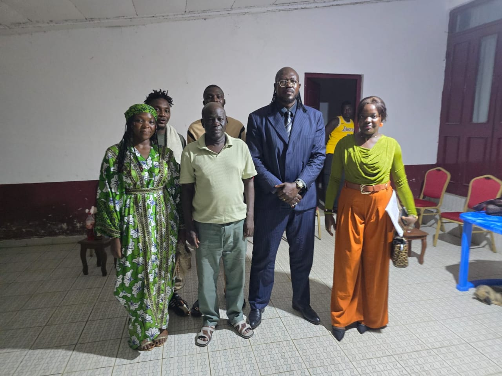
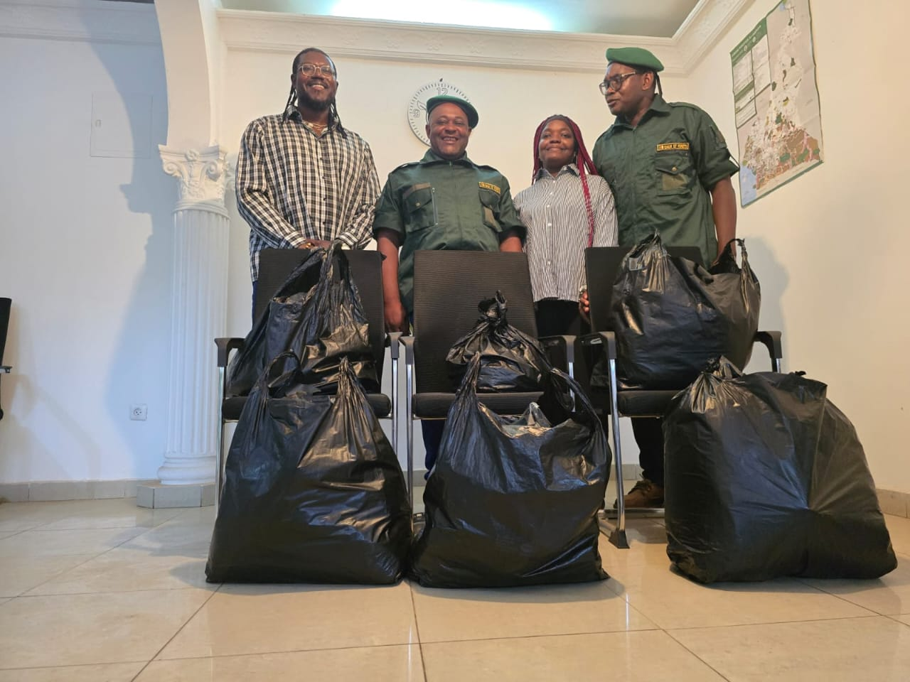
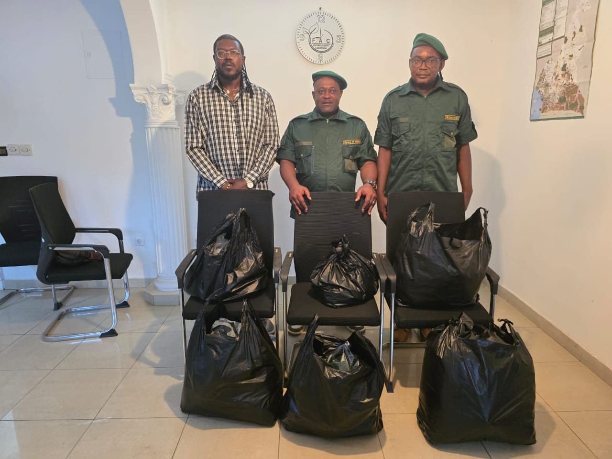

Reboisement & agroforesterie
Plantation d'essences locales et systèmes agroforestiers pour restaurer les sols dégradés et créer des revenus durables pour les exploitants.
Crédits carbone · Cameroun · Bassin du Congo
Future Awaits Cameroon finance et développe des projets de compensation carbone à fort impact : restauration des mangroves, reforestation, protection des forêts et solutions durables, portés avec les communautés locales.
Notre vision
Future Awaits Cameroun (FAC) est née d'une conviction simple : le développement de l'Afrique passe aussi par la protection de son environnement. Créée le 25 novembre 2023, notre entreprise s'engage résolument dans le marché des crédits carbone pour transformer les richesses forestières du Cameroun en opportunités durables.
FAC œuvre pour la préservation des écosystèmes forestiers camerounais tout en créant de la valeur économique et sociale pour les communautés locales. Nous concevons, développons et accompagnons des projets carbone forestiers qui allient impact environnemental mesurable et développement territorial.

Notre histoire
Tout commence avec Monsieur Ckuidjeu Tchoukua. Sportif de passion — et boxeur dans l'âme — cet autodidacte d'une quarantaine d'années a toujours porté en lui l'envie de faire rejaillir sur son pays natal les expériences acquises à l'international.
Animé par un amour profond de la nature et de la protection de l'environnement, il a trouvé sa voie : le marché des crédits carbone. C'est ainsi que Future Awaits Cameroun a vu le jour.
« Si tu veux que je t'aide, porte un projet dans ton pays natal. »
Le défi lancé par son employeur italien — le déclic à l'origine de FAC
Nos jalons
Depuis notre création, nous avons construit progressivement des relations solides avec les acteurs institutionnels et locaux du Cameroun.
Reconnaissance officielle comme partenaire du Ministère de l'Environnement et de la Protection de la Nature.
Signature d'une convention de partenariat avec le Centre Technique de la Forêt Communale.
Protocole d'accord pour un projet carbone forestier avec la commune de Ngaoundal.
Protocole d'accord avec la commune de Nyambaka et contrat de partenariat avec le Centre Technique de la Forêt Communale.
Signature de mémorandums d'entente avec plusieurs mairies à travers le Cameroun.




Nos domaines d'intervention
Plantation d'essences locales et systèmes agroforestiers pour restaurer les sols dégradés et créer des revenus durables pour les exploitants.
Lutte contre la déforestation par la surveillance satellite, la gouvernance communautaire et la sécurisation foncière des massifs forestiers.
Foyers de cuisson améliorés, énergie propre et économie circulaire pour réduire la pression sur les ressources forestières au quotidien.
Nos actions sur le terrain

Séance de travail avec les maires, les secrétaires généraux et le chef du village de Mundemba autour du projet de crédits carbone forestier. Après la présentation de FAC et les échanges avec les autorités locales, les mémorandums d'entente ont été signés avec les communes présentes.

Atelier de formation des décideurs sur l'intégration des projections et scénarios climatiques dans le processus de prise de décision, aux côtés des équipes de FAC et de ses partenaires institutionnels.

Atelier sous-régional consacré à la réduction des risques de catastrophes (RRC), aux systèmes d'alerte précoce (SAP), à la lutte contre les plastiques et à la préservation des mangroves.
Étude du terrain, cartographie satellite et évaluation du potentiel carbone du site.
Validation selon les standards internationaux et suivi continu des indicateurs environnementaux.
Émission des crédits carbone et redistribution des bénéfices aux communautés locales.
Notre réseau international
Zimbabwe · Brésil · marque Future Awaits
Notre partenaire stratégique, présent au Zimbabwe, au Brésil et sous la marque Future Awaits. Ensemble, nous cumulons une solide expertise du marché des crédits carbone.
Europe · États-Unis · fondée en Italie en 2020
Notre marque européenne et américaine, spécialisée dans le conseil en stratégies durables, la facilitation de ventes de crédits carbone et le développement de projets générateurs de crédits. Neutralia accompagne avec succès de grandes entreprises internationales dans leur transition carbone.
Parlons de votre projet
Que vous soyez investisseur, entreprise en quête de compensation carbone, ou porteur de projet local, notre équipe basée à Douala vous accompagne à chaque étape.